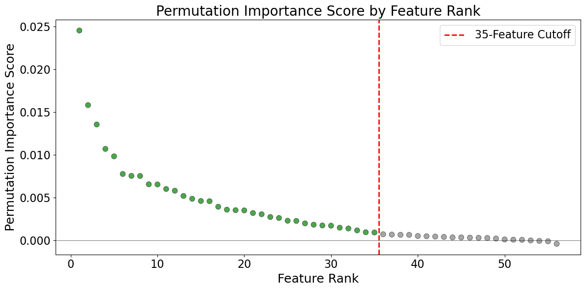
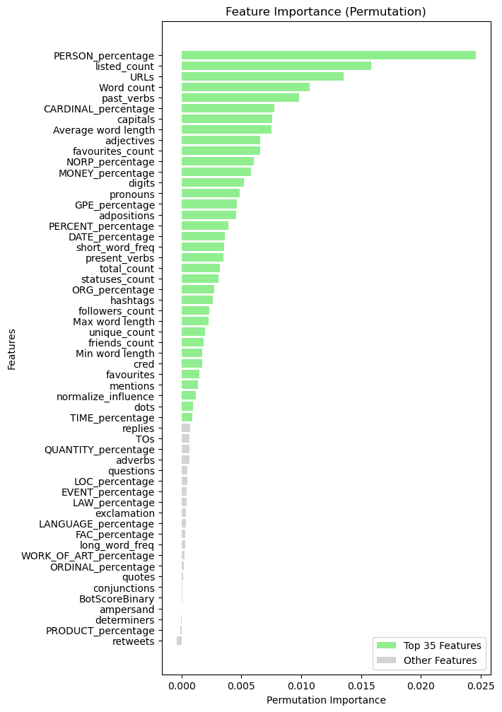
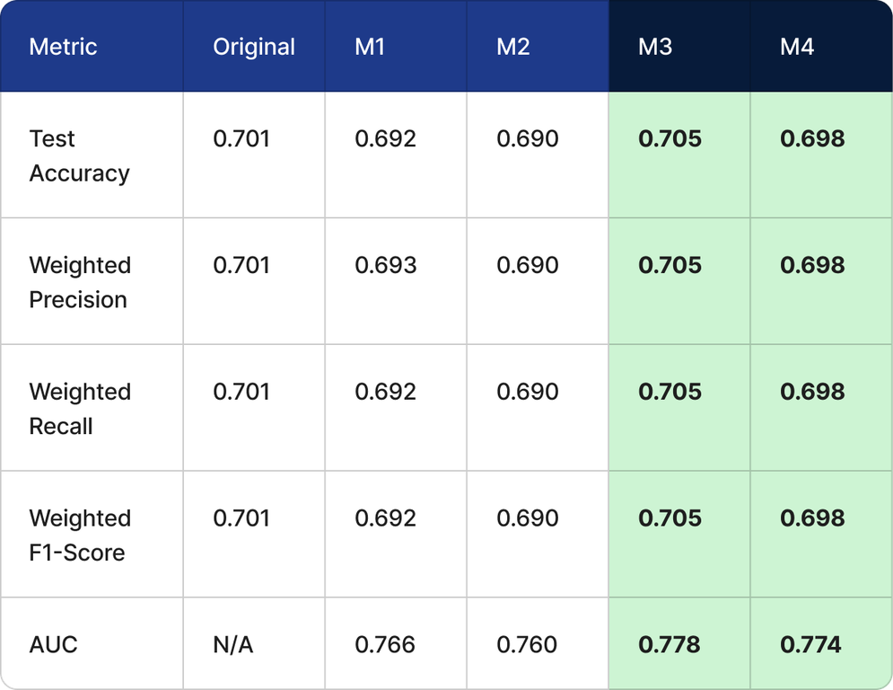
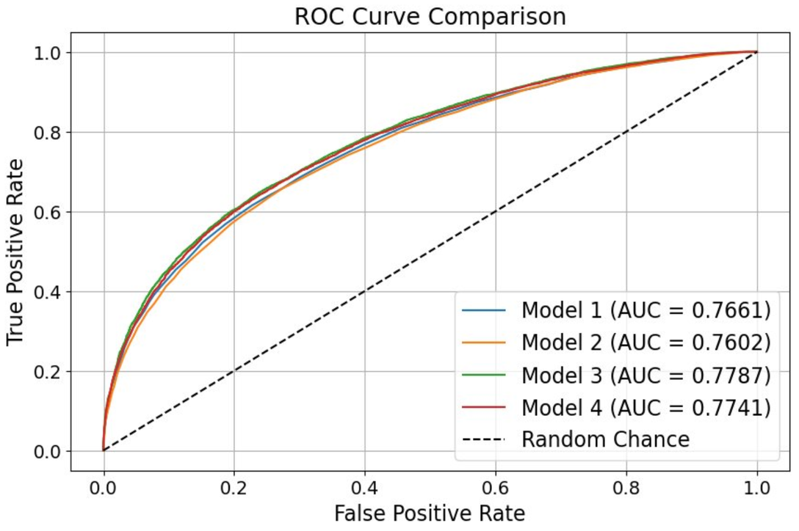

Seeking Truth: Building a Classifier to Detect Fake News
On platforms like X (formerly Twitter), far more posts appear every day than people could ever check by hand, so scalable tools are needed to flag misinformation. Dadkhah et al. (2024) trained machine learning classifiers to tell real news from fake news on X using their open TruthSeeker dataset. We set out to replicate their results and to test whether a model with fewer features could perform just as well.
Data and methods
After removing duplicates and empty rows, the dataset contained 134,198 tweets tied to 1,400 PolitiFact-verified news statements, with a balanced 50/50 split of real and fake labels from Amazon Mechanical Turk coders. We used 56 structured features, covering text counts, lexical and syntactic features, and user metadata such as follower count and bot score. We split the data 80/20 into training and test sets and fit the scaler on the training set only, to avoid data leakage.
We first compared several classifiers, including logistic regression, k-nearest neighbors, decision trees, support vector machines, and Random Forest. Random Forest had the highest test accuracy (0.692) and ran much faster than the SVMs, so we used it for the rest of the study.
Feature reduction
We ranked all 56 features by permutation importance, which measures how much accuracy drops when a feature’s values are shuffled. Importance fell steeply among the top features and flattened out at about rank 35, so we kept the top 35. The most important predictor was the share of named people mentioned in a tweet, followed by how many Twitter lists the user appears on, the number of URLs, word count, and past-tense verbs.


Results
We compared four Random Forest models: untuned and tuned versions with all 56 features and with the top 35. For the tuned models, we searched the number of trees, tree depth, and split and leaf settings with RandomizedSearchCV and 5-fold cross-validation. The tuned 56-feature model (M3) performed best, with 70.5% accuracy and an AUC of 0.778, slightly above the original paper’s 70.1%. The tuned 35-feature model (M4) reached 69.8% accuracy and an AUC of 0.774 while using 37.5% fewer features.


Conclusion
Hyperparameter tuning let our replication slightly outperform the original model, and the 35-feature model kept almost all of its predictive power. A smaller model like this needs less data collection, storage, and computing power, which makes it more practical for real-world use. Two limitations remain. Feature importance was computed on the test set, so the reduced models’ scores may be slightly optimistic, and tweets about the same news statement could appear in both the training and test sets. Future work could group tweets by statement when splitting the data and look at how the most useful features change over time.